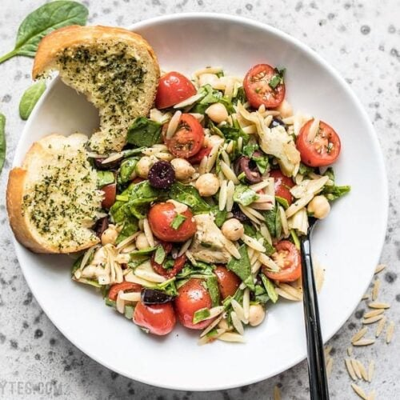

Italian Orzo Salad

Description
Filling enough to serve as a light meal, but light enough to act as an easy side dish, this Italian Orzo Salad is a versatile addition to your weekly meal prep.
Ingredients
Italian Dressing
- 1/4 cup olive oil
- 2 Tbsp red wine vinegar
- 1 Tbsp lemon juice
- 1 tsp Italian seasoning blend
- 1/8 tsp garlic powder
- 1/4 tsp salt
- 1 tsp Dijon Mustard
- 1 tsp sugar
Salad
- 1 cup orzo (uncooked)
- 1 15oz. can chickpeas
- 4 oz. fresh spinach
- 2 roasted red peppers (1/2 of 12oz. jar)
- 1/2 12oz. jar quartered artichoke hearts
- 1 pint grape tomatoes
Directions
- Make the vinaigrette first so the flavors have time to blend. Add the olive oil, red wine vinegar, lemon juice, Italian seasoning blend, garlic powder, salt, Dijon, and sugar in a bowl or jar. Whisk the ingredients together or close the jar and shake until combined. Set the dressing aside.
- Cook the orzo according to the package directions (boil until tender). Drain the orzo in a colander and rinse briefly with cool water. Allow the orzo to cool and drain as you prepare the rest of the ingredients. You want the pasta to be as cool and dry as possible.
- Rinse and drain the can of chickpeas, again allowing them to drain very well as you prepare the rest of the ingredients.
- Roughly chop the spinach and place it in a large bowl. Remove the roasted red peppers, olives, and artichoke hearts from their brines. Slice the olives and roasted red peppers, and roughly chop the artichoke hearts. Slice the grape tomatoes in half. Place the chopped vegetables in the bowl with the spinach.
- Finally, add the drained orzo and chickpeas to the bowl with the other ingredients. Stir the vinaigrette once more, then add half to the bowl. Toss the salad ingredients together until coated, and add more dressing if desired (I used the entire batch, but it's always best to start with half and add more as needed).